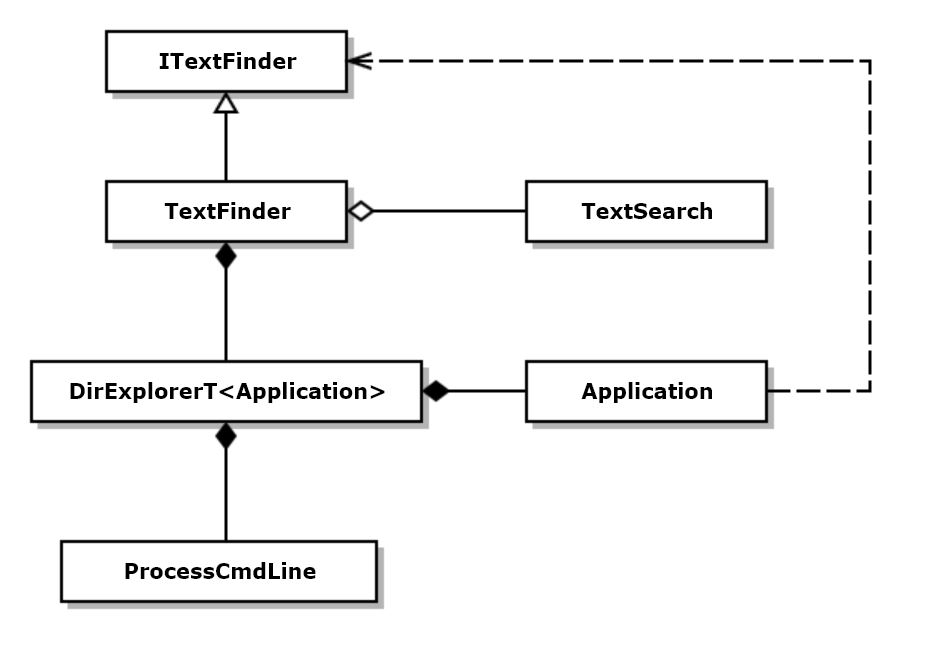
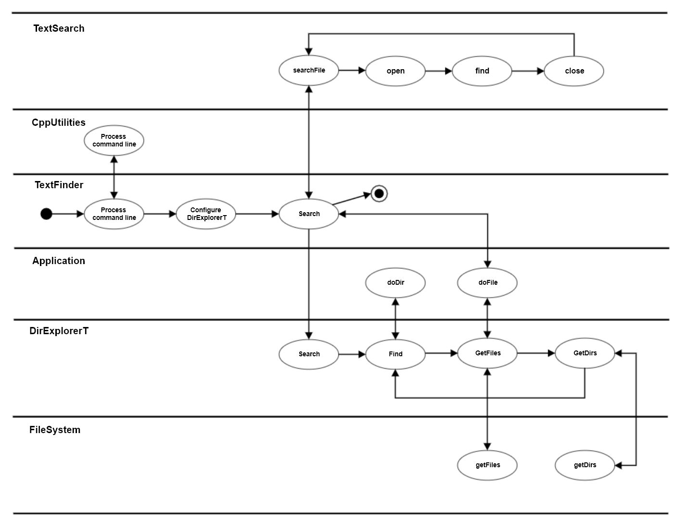
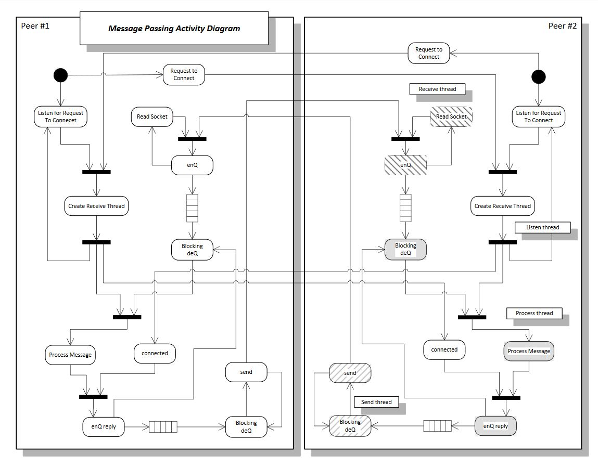

UML Diagrams
Package Diagrams:
- TextFinder is responsible for finding every file, in a specified directory tree, that contains text matching a specified regular expression. It does that using services of the other packages shown
- CodeUtilities provides processing of the program's command line, capturing each of the options specified there, and encapsulating them for use later in the program.
- DirExplorerT is a reusable directory navigator that does a recursive depth first search of a specified directory tree. For each directory and file encountered, it calls doDir and doFile methods in a class that manages application specific details.
- FileSystem is used by DirExplorerT to discover directories and files using the Windows API.
- Application is an application specific class that defines processing for directories and files.
- TextSearch defines how text files are opened and searched for regular expression matches.

Figure 1. TextFinder Package Diagram
Class Diagrams:

Figure 2. TextFinder Class Diagram
Activity Diagrams:

Figure 3. TextFinder Activity Diagram
Activity Diagrams with Synchronization:
- Mulitple inputs to a synchronizer indicate that no processing on the output side can occur until all of the input processing activities have completed.
- Multiple outputs from a synchronizer indicate that each output is independent of the others and are forked for concurrent processing.

Figure 4. MsgPass Activity with Synchronization